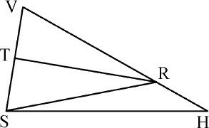
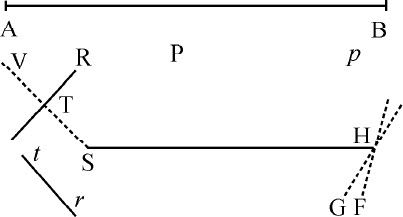
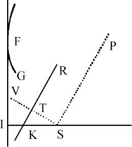
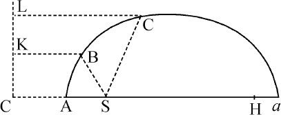
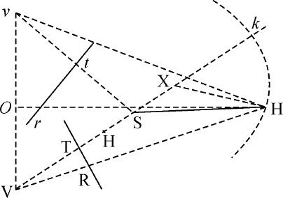
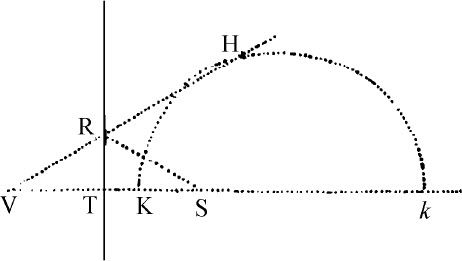
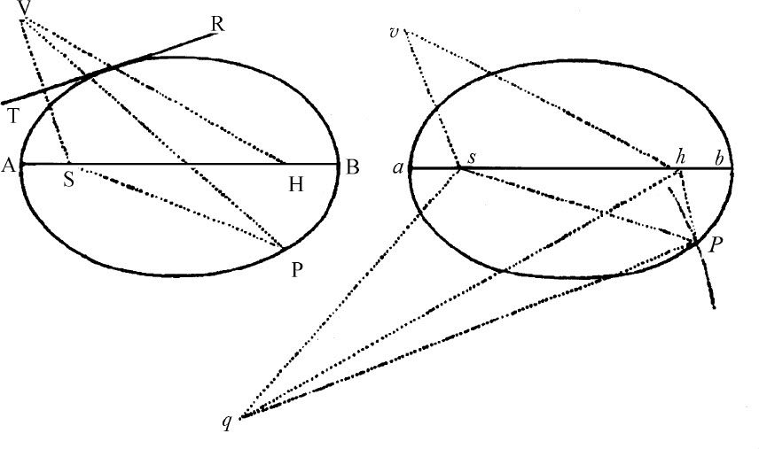
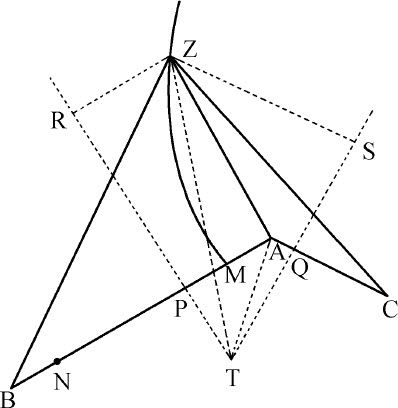
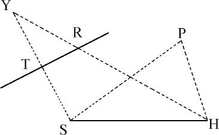
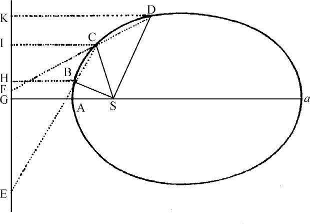

第4章
由已知焦点求椭圆、抛物线和双曲线轨道
引理15
如果由椭圆或双曲线的两个焦点S，H作直线SV，HV相交于任意第三个点V，使HV等于图形的主轴，即等于焦点所在轴，而另一条直线SV被其上的垂线TR在T点等分，则该垂线TR将在某处与该圆锥曲线相切；或者反之，如果它们相切，则HV必等于图形的主轴。

因为，如果必要的话，可使垂线TR与HV相交于R，连接SR。由于TS与TV相等，所以直线SR与VR，以及角TRS与TRV均相等，因而点R在圆锥曲线上，TR将与它在同一点相切；反之亦然。
证毕。
命题18 问题10
由已知的一个焦点和主轴，做出椭圆或双曲线，使之通过给定点并与给定直线相切。

令S为图形的公共焦点；AB为任意圆锥曲线的主轴长度；P为圆锥曲线所应通过的点，TR为它应与之相切的直线。以P为中心，AB－SP为半径，如果轨道是椭圆的话，或者以AB＋SP为半径，如果轨道是双曲线的话，作圆周HG。在切线TR上作垂线ST并延长到V使TV等于ST。再以V为圆心以AB为半径作圆周FH。以此方法，无论是已知两点P与p ，或两条切线TR与tr ，或一点P与一条切线TR，都可以作两个圆周。令H为其公共交点。以S，H为焦点，由已知主轴作圆锥曲线，问题即得解。因为（椭圆时PH＋SP，双曲线时PH－SP均等于主轴）所作圆锥曲线将通过点P，且（由前述引理）与直线TR相切，由相同方法可使它通过两点P和p ，或与两条直线TR和tr 相切。
命题19 问题11
由一个已知焦点作抛物线使之通过已知点并与已知直线相切。

令S为焦点，P为给定点，TR为已知直线。以P为圆心，PS为半径作圆周FG，由焦点作切线的垂线ST，并延长到V点，使TV等于ST。用相同方法可作另一个圆fg ，如果已知另一个点p ；或求出另一个点v ，如果另一条直线tr 已知；再作直线IF，在已知两点P与p 时，可使它与两圆相切；或两切线TR与tr 已知时，使之通过两点V与v ；或已知点P与切线TR时，使之与圆FG相切并通过点V，在FI上作垂线SI，K为其中点，以SK为主轴，K为顶点做出抛物线，问题即得到解决。因为该抛物线（SK等于IK，SP等于FP）将通过点P，而且（由引理14推论Ⅲ）因为ST等于TV，而角STR是直角，它将与直线TR相切。
完毕。
命题20 问题12
由一个已知焦点，做出通过已知点并与已知直线相切的圆锥曲线。

情形1．由已知焦点求圆锥曲线ABC，使之通过两点B，C。因为圆锥曲线类型已知，其主轴与焦点距离的比值也已知，取KB比BC以及LC比CS等于该值，以B，C为圆心，BK，CL为半径作两个圆；并在与它们相切于K和L的直线KL上作垂线SG；在SG上截取两点A与a ，使GA比AS，以及Ga 比a S等于KB比BS；再以Aa 为轴，A与a 为顶点做出圆锥曲线，问题得解。因为令H为所画图形的另一个焦点，由于GA:AS＝Ga :a S，即有Ga －GA:a S－AS＝GA:AS，或者，Aa :SH＝GA:AS，所以GA与AS的比等于所画图形的主轴与焦距的比，所以，所作图形正是所要求的类型。而且，由于KB比BS，以及IC比CS相等，该图形将通过点B，C，这正是圆锥曲线所要求的。

情形2．由焦点S作圆锥曲线，使之与两条直线TR，tr 相切。过该焦点作这些切线的垂线ST，St，并延长到V，v ，使TV，tv 等于TS，t S，在O点等分Vv ，并作其不定垂线OH，并与直线VS延长线相交，在VS线上截取K，R，使VK比KS，以及VR比RS等于要画的圆锥曲线的主轴与其焦距的比，以Kk 为直线作圆与OH相交于H。以S，H为焦点，VH为主轴作圆锥曲线，问题得解。因为在X等分Kk ，连接HX，HS，HV，Hv ，由于VK比KS等于Vk 比k S；因而求和等于VK＋Kk 比KS＋k S，求差等于Vk －VK比k S－KS，即等于2VX比2KX以及2KX比2SX，所以等于VX比HX以及HX比SX，而三角形VXH，HXS相似，所以VH比SH等于VX比XH，所以等于VK比KS，所以，所画圆锥曲线的主轴VH与其焦距SH的比，等于所要求的圆锥曲线的主轴与焦距的比。所以它们类型相同。而且由于VH，v H等于主轴，VS，v S被直线TR，tr 垂直等分，显然（由引理15）它们与所画曲线相切。
完毕。

情形3．由焦点S作圆锥曲线，使之在给定点P与直线TR相切。在直线TR上作垂线ST，延长到V使TV等于ST，连接VR，并在直线VS延长线上截取K，k 两点，使VK比SK，以及VK比Sk ，等于要画的椭圆主轴比其焦距，以Kk 为直径作圆周与直线VR相交于H点；再以S，H为焦点，VH为主轴，作圆锥曲线，问题得解。因为VH:SH＝VK:SK，所以等于所要画的圆锥曲线的主轴比其焦距（我已在情形2中证明）；所以所画曲线与所要画的曲线类型相同，而由圆锥曲线特性知，直线TR等分角VRS，与曲线在点R相切。
完毕。

情形4．由焦点S作圆锥曲线APB使之与直线TR相切，并通过切线外任一已知点P，并与以S，h 为焦点，以ab 为主轴的两锥曲线apb 相似。在切线TR上作垂线ST，延长至V点使TV等于ST；作角hsq ，shq 等于角VSP，SVP，以q 为圆心，以其与ab 的比等于SP与VS的比的长度为半径作圆周与图形apb 交于P点。连接SP，作SH使SH比sh 等于SP比sp ，并使角PSH等于角psh ，角VSH等于角psq 。然后再以S，H为焦点，AB等于距离VH为主轴作圆锥曲线，问题得解。因为如果作sv 使sv 比sp 等于sh 比sq ，角vsp 等于角hsq ，则角vsh 等于角psq ，三角形svh 与spq 相似，所以vh 比pq 等于sh 比sq ；即（因为三角形VSP，hsq 相似）等于VS比SP，或等于ab 比pq 。所以vh 等于ab ，但由于三角形VSH，vsh 相似，VH比SH等于vh 比sh ，即所画曲线的主轴与焦距的比等于主轴ab 与焦距sh 的比，所以所画图形与图形apb 相似，而由于三角形PSH相似于三角形psh ，该图形通过点P；又由于VH等于其主轴，VS垂直于直线TR且被TR等分，因而该图形与直线TR相切。
完毕。
引理16
由三个已知点向第四个未知点作三条直线，使其差或为已知，或为零。

情形1．令已知点为A，B，C，而Z是第四个要找出的点，由于直线AZ，BZ的差是给定的，点Z的轨迹将是双曲线，其焦点是A和B，主轴是给定的差，令该主轴为MN，取PM比MA等于MN比AB，作PR垂直于AB，并作PR的垂线ZR；则由双曲线特性知，ZR:AZ＝MN:AB。由类似的理由，点Z的轨迹是另一条双曲线，其焦点是A，C，主轴是AZ与CZ的差，作QS垂直于AC，对QS而言，如果由双曲线上任意一点Z作垂线ZS，则ZS比AZ等于AZ与CZ的差比AC。所以，ZR与ZS对AZ的比值是已知的，因而ZR比ZS的值也是已知的。所以，如果直线PR，SQ相交于T，作TZ和TA，则图形TRZS类型已知，而点Z位于其上的直线TZ位置也就给定。而直线TA与角ATZ也将给定；因为AZ与TZ比ZS的值已给定，它们之间的比也就给定，类似地三角形ATZ也可给定，其顶点是点Z。
证毕。
情形2．如果这三条直线中的两条，如AZ和BZ，是相等的，作直线TZ平分直线AB，再用与上述相同方法找出三角形ATZ。
证毕。
情形3．如果三条直线均相等。点Z将位于通过点A，B，C的圆周的圆心上。
证毕。
本引理中问题在维埃特 (1) 收编的［佩尔吉的］阿波罗尼奥斯 (2) 《论切触》（Book of Tactions of Apollonius [of Perga]）中作了类似解决。
命题21 问题13
由一个已知焦点作圆锥曲线使之通过已知点并与已知直线相切。

令焦点S，点P和切线TR均给定，设求另一焦点H。在切线上作垂线ST并延长到Y，使TY等于ST，则YH等于主轴，连接SP，HP，则SP将是HP与主轴的差。用此方法，如果已知更多的切线TR，或已知更多的点P，总可以确定由所说的点Y或P到焦点H的同样多的直线YH或PH，它们中哪一个等于主轴，哪一个是主轴与已知长度SP的差；所以，也就知道它们中哪些是相等的，或具有给定的差，因此（由前述引理），另一个焦点H也就知道了，而已知焦点和轴长（或是YH，或者当为椭圆时，为PH＋SP；或者，当为双曲线时，为PH－SP）时，圆锥曲线给定。
完毕。
附注
当圆锥曲线是双曲线时，上述讨论中不包括共轭双曲线。因为物体沿一条双曲线连续运动时不可能跳跃到它的共轭双曲线轨道上。

已知三点的情形，可作更简捷的解决，令B，C，D为已知点。连接BC，CD，并延长到E，F，使EB比EC等于SB比SC，而FC比FD等于SC比SD，在EF上作垂线SG，BH，并将SG延长至a ，使GA比AS以及Ga 比a S等于HB比BS：则A为顶点，而Aa 为曲线主轴，并由GA大于、等于或小于AS决定是椭圆、抛物线或双曲线。在前一情形中点a 与点A同样落于直线GF的同侧；第二种情形里点a 位于无限远处；第三种情形点a 位于直线GF另一侧。因为如果在GF上作垂线CI，DK，则IC比HB等于EC比EB，即等于SC比SB，作置换调整，IC比SC等于HB比SB，或等于EC比SA，由类似理由可以证明，KD与SD比值相同，所以，点B，C，D位于以S为焦点的圆锥曲线上，并使得由焦点S到曲线上各点的直线，与由同一点到直线GF的垂线的比为已知值。
杰出的几何学家德拉希尔（M．de la Hire） (3) 曾在他的著作《圆锥曲线》第八卷命题25中以几乎相同的方法解决了这一问题。
————————————————————
(1) Vieta，1504—1603，法国数学家，法文件Francois Viète，他在历史上第一个引入系统的代数符号，并对方程论作了改进。——译者注。
(2) Apollonius，约公元前262—前190，古希腊数学家，是古代科学巨著。圆锥曲线。的作者。——译者注。
(3) M．de la Hire，1640—1718，法国画家、数学家和天文学家。映射几何和解析几何的先驱者之一，其《圆锥曲线》一书发表于1685年。——译者注。